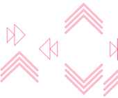

A Regulated Financial Institution must comply with the Foreign Account Tax Compliance Act (FATCA) and Common Reporting Standard (CRS). These tax regulations require bank operational tax administrators to collect certain personal information from account holders relating to their tax status and potentially report this, along with their account details, to relevant tax authorities.
An automated process for batch processing key operational data stores and historical data warehouse details must be processed daily to review CRS & FATCA certifications. Where gaps exist, the bank must send and receive formal letters to customers for further clarifications and proof to comply with FATCA and CRS tax legislation. The self-certification and reporting process and the consequences of not completing the self-certification has important repetitional and financial consequences for the bank and must be managed to prescribed rules.
Due to the immature nature of CRS legislation, the client was experiencing significant changes to the managed service solution to ensure regulatory compliance and guard against fines or censure in respect of the Tax Authority “Schemas”. The Schema is the information the bank must provide on customers and the format of that information s dictated by the Tax Authority. There are now 40+ countries signed up to the CRS regulation. The lack of flexibility and cost of the existing managed service solution to comply with HMRC/IRS demands represented a significant challenge and an in house cloud based solution was developed to allow the business to comply.
Case Management is the component that holds cases on customers which are created via a rule based system or by a manual trigger from the data warehouse. Case Operators work the cases resolving outstanding indicia and determining customer tax status by asking customers to provide self certification. Based on this the updated tax status, entity status etc is fed back to the data warehouse.
Due to the immature nature of CRS legislation, the client was experiencing significant changes to the managed service solution to ensure regulatory compliance and guard against fines or censure in respect of the Tax Authority “Schemas”. The Schema is the information the bank must provide on customers and the format of that information s dictated by the Tax Authority. There are now 40+ countries signed up to the CRS regulation. The lack of flexibility and cost of the existing managed service solution to comply with HMRC/IRS demands represented a significant challenge and an in house cloud based solution was developed to allow the business to comply.
Case Management is the component that holds cases on customers which are created via a rule based system or by a manual trigger from the data warehouse. Case Operators work the cases resolving outstanding indicia and determining customer tax status by asking customers to provide self certification. Based on this the updated tax status, entity status etc is fed back to the data warehouse.